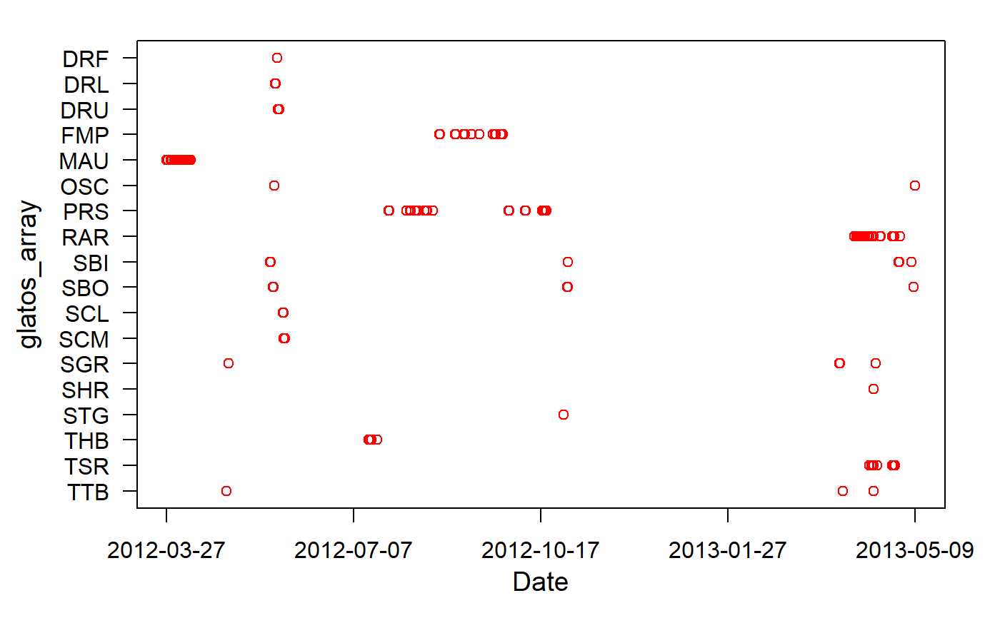
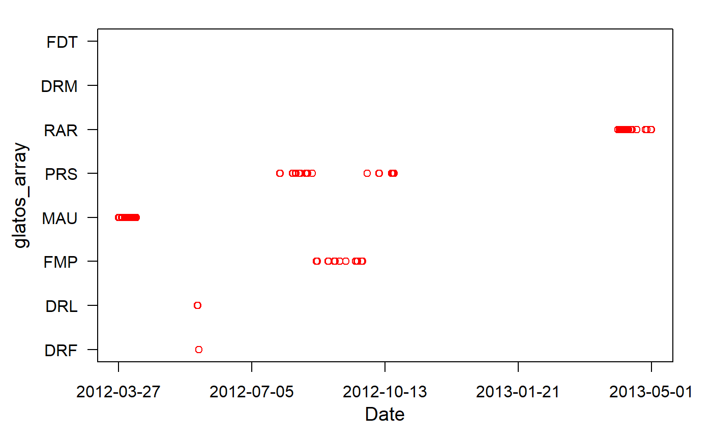
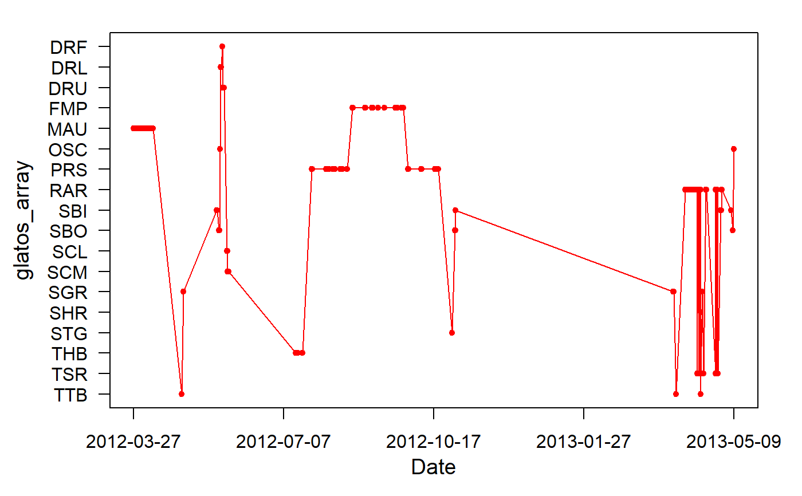

abacus_plot.RdPlot detection locations of acoustic transmitters over time.
abacus_plot(det, location_col = "glatos_array", locations = NULL, ylab = NA, pch = NA, out_file = NULL, outFile = NULL, ...)
| det | A OR A data frame containing detection data with at least two columns,
one of which must be named 'detection_timestamp_utc', described below,
and another column containing a location grouping variable,
whose name is specified by The following column must appear in
|
|---|---|
| location_col | A character string indicating the column name in
|
| locations | An optional vector containing a list of locations
|
| ylab | A character string indicating the y-axis label that will appear
on the figure (default will match |
| pch | A numeric value corresponding to the symbol to be used for plotting. See https://www.statmethods.net/advgraphs/parameters.html. |
| out_file | An optional character string with the name (including
extension) of output image file to be created. File extension
will determine type of file written. For example, |
| outFile | Deprecated. Use |
| ... | Other plotting arguments that pass to "plot" function (e.g., col, lwd, type). |
An image to the default plot device or a file containing the
image if out_file is specified.
NAs are not allowed in any of the two required columns.
The locations vector is used to control which locations will
appear in the plot and in what order they will appear. If no locations
vector is supplied, the function will plot only those locations that
appear in the det data frame and the order of locations on the
y-axis will be alphebetical from top to bottom.
By default, the function does not distinguish detections from different transmitters and will therefore plot all transmitters the same color. If more than one fish is desired in a single plot, a vector of colors must be passed to the function using the 'col =' argument. The color vector must be the same length as the number of rows in the detections data frame or the colors will be recycled.
Plotting options (i.e., line width and color) can be changed using optional graphical parameters http://www.statmethods.net/advgraphs/parameters.html that are passed to "segments" (see ?segments).
#get path to example detection file det_file <- system.file("extdata", "walleye_detections.csv", package = "glatos") det <- read_glatos_detections(det_file) #subset one transmitter det2 <- det[det$animal_id == 153, ] #plot without control table and main tile and change color to red abacus_plot(det, locations=NULL, main = "TagID: 32054", col = "red")#example with locations specified abacus_plot(det, locations=c("DRF", "DRL", "FMP", "MAU", "PRS", "RAR", "DRM", "FDT"), main = "TagID: 32054", col = "red")#plot with custom y-axis label and lines connecting symbols abacus_plot(det, main = "TagID: 32054", type = "l", col = "red")